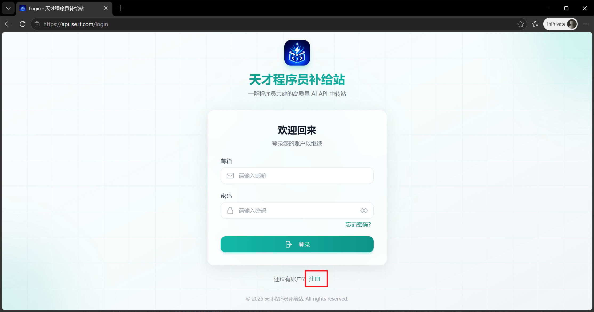
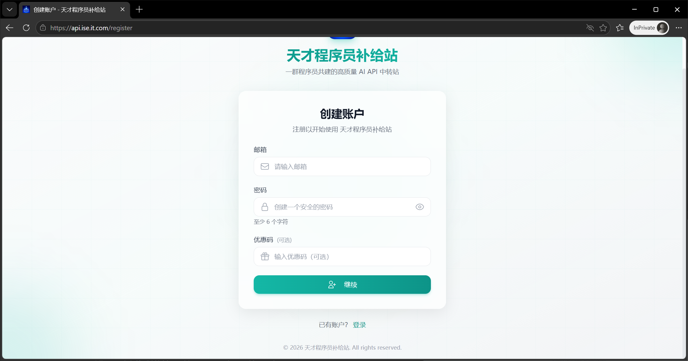
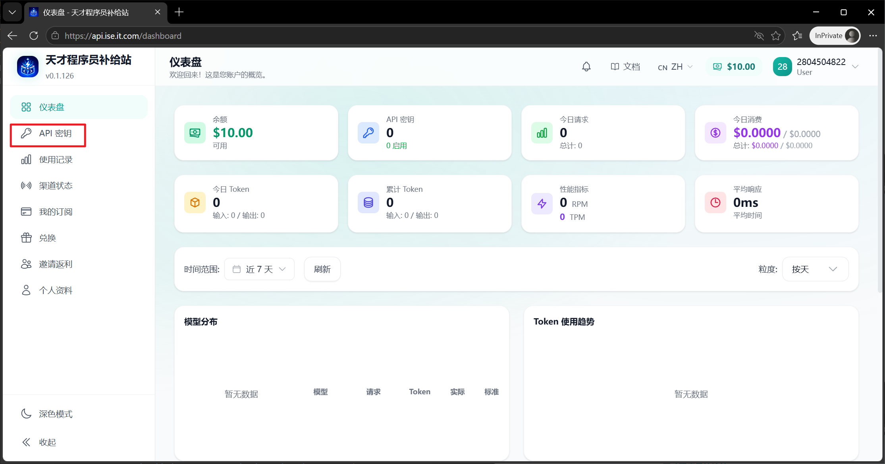
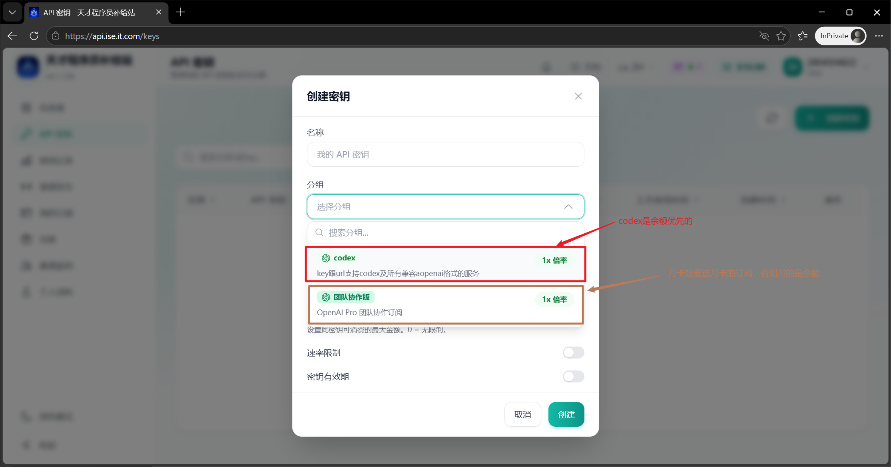
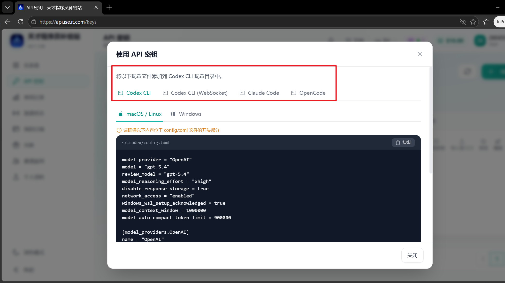
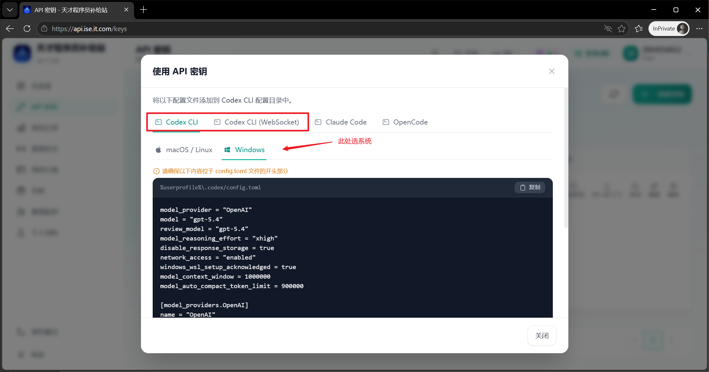
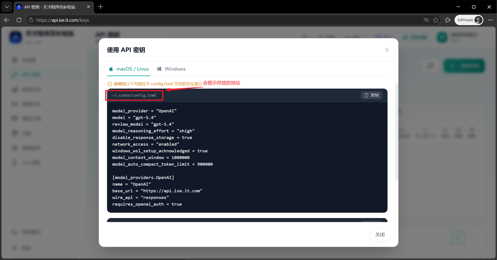
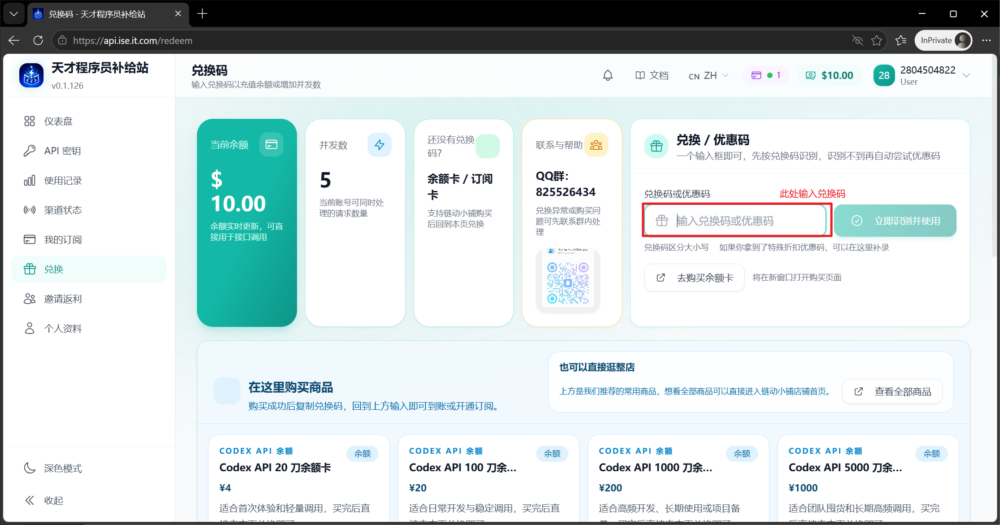
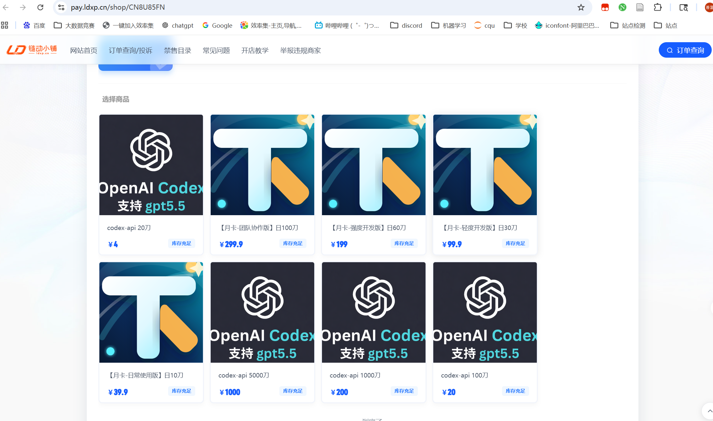
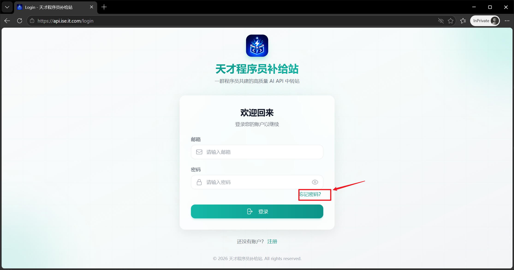

天才程序员拼车站文档
这份文档面向第一次接入的用户。你只需要完成注册、创建 API Key、购买或兑换商品，就可以按 OpenAI 兼容方式直接接入你的脚本、客户端或服务端项目。
开始前先记住这三个地址
- 站点地址：
https://api.ise.it.com - OpenAI 兼容 Base URL：
https://codex.ise.it.com/v1 - 说明：网页登录、兑换、购买入口用
api.ise.it.com；脚本、Codex、Claude Code 等 API 调用建议用codex.ise.it.com - 商品总入口：
https://pay.ldxp.cn/shop/CN8U85FN
3 分钟快速开始
- 注册账号
使用邮箱注册并完成验证，后续忘记密码也可通过邮箱找回。 - 创建 API Key
登录后到 API 密钥页创建一个你自己的 Key，用于脚本或客户端调用。 - 购买或兑换
在链动小铺买余额卡或订阅卡，回到站内兑换页输入兑换码。 - 开始调用
按 OpenAI 兼容方式填入 Base URL 和 API Key，即可开始使用。
目录
1. 平台说明
天才程序员拼车站面向程序员、学生和小团队，提供统一的 AI API 拼车接入入口。你注册后可以自己创建 API Key、购买商品、兑换余额卡、开通订阅，并在一个站内完成账号和用量管理。
适合谁
适合需要脚本调用、OpenAI SDK 调用、课程作业、日常开发测试和团队协作的人。
你会得到什么
统一账号、统一 Key、公开商品入口、站内兑换页、优惠码能力和 QQ 群支持。
2. 注册与登录
- 进入到登录界面，点击注册账号。

- 根据页面提示完成邮箱验证。

- 如有优惠码，可在注册时填写；若忘记使用请联系客服处理
- 忘记密码时，打开
/forgot-password，通过邮箱找回。 快捷入口：
3. 创建 API Key
- 登录后进入
API 密钥页面。
- 点击创建，给这个 Key 起一个方便你自己识别的名称。

- 若你的账号已开通对应权限，创建时即可看到可选分组。
- 创建后点击使用密钥，请把 Key 保存到脚本、客户端或服务端配置里即可，此处有教程。

如果你创建 Key 时看不到预期分组，通常不是页面坏了，而是当前账号还没有对应的余额权限、分组授权或订阅权限。先确认商品是否购买并成功兑换。 若有问题请联系客服 QQ：1198716953
4. API 接入与客户端配置
- 如果你是写脚本、跑服务、接 SDK，就看 4.2 OpenAI 兼容接入
- 如果你是用 Codex CLI、Claude Code、Open Code 这类客户端，就看 4.3 / 4.4 / 4.5
4.1 先记住这三个接入要素
- 站点地址：
https://api.ise.it.com - API Base URL：
https://codex.ise.it.com/v1 - API Key：在站内
API 密钥页面创建，格式通常是sk-xxxx
4.2 直接用脚本 / SDK 接入（OpenAI 兼容）
推荐优先按 OpenAI 兼容 方式接入。大多数支持自定义 Base URL 的 SDK、客户端和第三方面板，都可以直接使用。
4.2.1 基本信息
- Base URL：
https://codex.ise.it.com/v1 - 认证方式：
Authorization: Bearer 你的 API Key - 模型名：以你站内当前可用模型和可见分组为准
4.2.2 Curl 示例
curl https://codex.ise.it.com/v1/chat/completions \
-H "Content-Type: application/json" \
-H "Authorization: Bearer sk-你的密钥" \
-d '{
"model": "gpt-4.1-mini",
"messages": [
{"role": "system", "content": "You are a helpful assistant."},
{"role": "user", "content": "你好，帮我写一个 Python 冒泡排序示例。"}
]
}'
4.2.3 Python OpenAI SDK 示例
from openai import OpenAI
client = OpenAI(
api_key="sk-你的密钥",
base_url="https://codex.ise.it.com/v1",
)
resp = client.chat.completions.create(
model="gpt-4.1-mini",
messages=[
{"role": "user", "content": "给我一个 FastAPI hello world 示例"}
],
)
print(resp.choices[0].message.content)
4.2.4 Node.js 示例
import OpenAI from "openai";
const client = new OpenAI({
apiKey: "sk-你的密钥",
baseURL: "https://codex.ise.it.com/v1",
});
const resp = await client.chat.completions.create({
model: "gpt-4.1-mini",
messages: [
{ role: "user", content: "写一个 Express 最小服务示例" }
],
});
console.log(resp.choices[0].message.content);
示例里的模型名只是演示。你真实能否调用某个模型，取决于当前账号拥有的分组权限、订阅状态和余额情况。
4.3 Codex 系列（CLI / VSCode 插件 / APP）
适用范围：Codex CLI、Codex VSCode 插件、Codex APP。这三类一般可以共用同一套站内生成的配置。
4.3.1 操作步骤
- 打开站内
API 密钥页面 - 找到你的密钥，点击右侧
使用密钥 - 切换到
Codex CLI或Codex CLI (WebSocket)标签
- 按提示把内容填到本地文件里

4.3.2 配置目录
| 系统 | 配置目录 |
|---|---|
| Windows | %USERPROFILE%\\.codex |
| macOS | ~/.codex |
| Linux | ~/.codex |
4.3.3 config.toml
model_provider = "OpenAI"
model = "gpt-5.4"
review_model = "gpt-5.4"
model_reasoning_effort = "xhigh"
disable_response_storage = true
network_access = "enabled"
windows_wsl_setup_acknowledged = true
model_context_window = 1000000
model_auto_compact_token_limit = 900000
[model_providers.OpenAI]
name = "OpenAI"
base_url = "https://codex.ise.it.com/v1"
wire_api = "responses"
requires_openai_auth = true
如果你用的是站内弹窗里的 Codex CLI (WebSocket) 标签，则配置会多出：
supports_websockets = true
[features]
responses_websockets_v2 = true
4.3.4 auth.json
{
"OPENAI_API_KEY": "sk-你的密钥"
}
4.3.5 提示
- Windows 用户注意不要把文件误存成
config.toml.txt - 最稳妥的方式是直接复制站内
使用密钥弹窗里的内容，不要手敲 - 如果你改完配置还是不生效，先完全退出客户端，再重新打开
截图占位：这里放 使用密钥 -> Codex CLI 的截图
4.4 Claude Code
如果你的账号开通了对应能力，可以直接使用站内 使用密钥 弹窗里的 Claude Code 配置。
4.4.1 操作步骤
- 打开
API 密钥 - 点击
使用密钥 - 切换到
Claude Code - 按你自己的系统复制对应命令
4.4.2 终端环境变量
Unix / macOS / Linux：
export ANTHROPIC_BASE_URL="https://codex.ise.it.com/v1"
export ANTHROPIC_AUTH_TOKEN="sk-你的密钥"
export CLAUDE_CODE_DISABLE_NONESSENTIAL_TRAFFIC=1
Windows CMD：
set ANTHROPIC_BASE_URL=https://codex.ise.it.com/v1
set ANTHROPIC_AUTH_TOKEN=sk-你的密钥
set CLAUDE_CODE_DISABLE_NONESSENTIAL_TRAFFIC=1
PowerShell：
$env:ANTHROPIC_BASE_URL="https://codex.ise.it.com/v1"
$env:ANTHROPIC_AUTH_TOKEN="sk-你的密钥"
$env:CLAUDE_CODE_DISABLE_NONESSENTIAL_TRAFFIC=1
4.4.3 settings.json
Unix / macOS 路径：
~/.claude/settings.json
Windows 路径：
%USERPROFILE%\.claude\settings.json
配置内容示例：
{
"env": {
"ANTHROPIC_BASE_URL": "https://codex.ise.it.com/v1",
"ANTHROPIC_AUTH_TOKEN": "sk-你的密钥",
"CLAUDE_CODE_DISABLE_NONESSENTIAL_TRAFFIC": "1",
"CLAUDE_CODE_ATTRIBUTION_HEADER": "0"
}
}
4.4.4 提示
- 终端变量修改后，要新开一个终端窗口才会读取
- 建议优先以站内弹窗给出的内容为准
- 如果你当前账号没有 Claude Code 对应分组，看不到相关能力是正常的
截图占位：这里放 使用密钥 -> Claude Code 的截图
4.5 Open Code
Open Code 也可以直接通过站内 使用密钥 弹窗生成配置。
4.5.1 配置文件位置
| 系统 | 配置路径 |
|---|---|
| Windows | %USERPROFILE%\\.config\\opencode\\opencode.json |
| macOS | ~/.config/opencode/opencode.json |
| Linux | ~/.config/opencode/opencode.json |
如果文件不存在，可以手动创建，也可以使用 opencode.jsonc。
4.5.2 写入配置文件
下面是一份可参考的最小配置示例：
{
"$schema": "https://opencode.ai/config.json",
"provider": {
"openai": {
"options": {
"baseURL": "https://codex.ise.it.com/v1",
"apiKey": "sk-你的密钥"
}
}
}
}
如果你想和站内完全一致，建议直接复制 使用密钥 -> Open Code 标签页里自动生成的内容。
4.5.3 /connect 命令方式（可选）
如果你不想手改 JSON，也可以先启动 Open Code，然后输入：
/connect
按提示填入：
baseURL：https://codex.ise.it.com/v1apiKey：你的sk-xxxx
4.5.4 提示
- Open Code 的模型、provider 和 options 可以按需调整
- 但第一次接入时，推荐先用站内生成的默认配置，成功后再改
截图占位：这里放 使用密钥 -> Open Code 的截图
4.6 在 Codex 里配置生图工具
如果你的账号已经开通生图分组，可以把本站的 OpenAI-compatible Images API 配进 Codex。配置完成后，你在 Codex 对话里说“生成一张图”“画一张海报”“做一张头像”时，Codex 就可以调用真实生图接口，而不是用本地代码假装画图。
4.6.1 先理解这三件事
| 项目 | 作用 |
|---|---|
| Codex 的 imagegen 能力 | 告诉 Codex 遇到生图任务时应该走生图流程 |
| API Base URL + API Key | 真正访问本站生图接口需要的地址和密钥 |
| 本地 wrapper 命令 | 给 Codex 一个固定命令入口，避免每次手写 curl，也避免把 Key 暴露在对话里 |
只看到 Codex 有 imagegen 能力，不代表它已经能调用本站生图接口。你还需要配置自己的 API Key。
4.6.2 准备 API 信息
你需要准备：
OPENAI_BASE_URL="https://codex.ise.it.com/v1"
OPENAI_API_KEY="你的 API Key"
OPENAI_IMAGE_MODEL="gpt-image-2"
推荐默认模型使用 gpt-image-2。这是官方兼容写法，也是本站给普通用户准备的默认入口；你按 OpenAI 官方 Images API 的习惯填写它即可。
本站同时支持一些更细的规格模型，适合你明确想要 2K、4K、横图、竖图或方图时使用：
| 模型名 | 类型 | 适合场景 |
|---|---|---|
gpt-image-2 |
官方兼容默认入口 | 默认推荐，普通生图、SDK 接入、Codex 自动调用优先用它 |
gpt-image-2-2k |
2K 默认规格 | 不特别指定比例时使用，适合通用图片 |
gpt-image-2-2k-square |
2K 方图 | 头像、封面、商品图、社交媒体方形图 |
gpt-image-2-2k-landscape |
2K 横图 | 横版海报、网页 Banner、宽屏配图 |
gpt-image-2-4k |
4K 默认规格 | 更高分辨率图片，适合需要更清晰细节的场景 |
gpt-image-2-4k-landscape |
4K 横图 | 大横幅、壁纸、宽屏电影感画面 |
gpt-image-2-4k-portrait |
4K 竖图 | 竖版海报、人物肖像、手机壁纸 |
如果你不确定该选哪个，直接用 gpt-image-2。如果你想确认当前 Key 实际能看到哪些生图模型，可以查询模型列表：
curl -sS \
-H "Authorization: Bearer sk-你的密钥" \
"https://codex.ise.it.com/v1/models"
能在 /v1/models 返回里看到的模型，才说明当前 Key 有对应权限。普通用户优先使用 gpt-image-2 即可。
4.6.3 写入本地环境配置
推荐把配置放在用户目录，并设置成仅当前用户可读：
mkdir -p ~/.config/openai-image
cat > ~/.config/openai-image/env <<'EOF'
export OPENAI_BASE_URL="https://codex.ise.it.com/v1"
export OPENAI_API_KEY="sk-你的密钥"
export OPENAI_IMAGE_MODEL="gpt-image-2"
EOF
chmod 600 ~/.config/openai-image/env
注意：不要把真实 Key 写进项目仓库，也不要发给别人。
4.6.4 创建生图 wrapper 命令
创建命令：
mkdir -p ~/bin
cat > ~/bin/openai-image-generate <<'PY'
#!/usr/bin/env python3
from __future__ import annotations
import argparse
import base64
import json
import os
from pathlib import Path
import subprocess
import sys
import tempfile
import time
def load_env(path: Path) -> None:
if not path.exists():
raise SystemExit(f"Missing env file: {path}")
for raw in path.read_text(encoding="utf-8").splitlines():
line = raw.strip()
if not line or line.startswith("#"):
continue
if line.startswith("export "):
line = line[len("export "):]
if "=" not in line:
continue
key, value = line.split("=", 1)
os.environ[key.strip()] = value.strip().strip("'\"")
def iter_sse_payloads(raw: str):
normalized = raw.replace("\r\n", "\n")
for block in normalized.split("\n\n"):
data_lines = []
for line in block.splitlines():
if not line.startswith("data:"):
continue
value = line[len("data:"):].strip()
if value and value != "[DONE]":
data_lines.append(value)
if data_lines:
yield "\n".join(data_lines)
def image_b64_from_obj(obj) -> str:
if not isinstance(obj, dict):
return ""
if "error" in obj:
raise SystemExit(json.dumps(obj["error"], ensure_ascii=False, indent=2))
data = obj.get("data")
if isinstance(data, list):
for item in data:
if isinstance(item, dict):
b64 = item.get("b64_json") or item.get("base64") or item.get("image_base64")
if b64:
return b64
b64 = obj.get("b64_json") or obj.get("base64") or obj.get("image_base64")
if b64:
return b64
response = obj.get("response")
if isinstance(response, dict):
output = response.get("output")
if isinstance(output, list):
for item in output:
if isinstance(item, dict):
result = item.get("result")
if result:
return result
return ""
def extract_image_b64(raw: str) -> str:
raw = raw.strip()
if not raw:
return ""
try:
return image_b64_from_obj(json.loads(raw))
except json.JSONDecodeError:
pass
found = ""
for payload in iter_sse_payloads(raw):
try:
obj = json.loads(payload)
except json.JSONDecodeError:
continue
b64 = image_b64_from_obj(obj)
if b64:
found = b64
return found
def main() -> int:
parser = argparse.ArgumentParser()
parser.add_argument("--prompt", default=None)
parser.add_argument("--prompt-file", default=None)
parser.add_argument("--out", default="output/imagegen/output.png")
parser.add_argument("--model", default=None)
parser.add_argument("--size", default="1024x1024")
parser.add_argument("--n", type=int, default=1)
parser.add_argument("--force", action="store_true")
parser.add_argument("--dry-run", action="store_true")
parser.add_argument("--stream", action="store_true")
parser.add_argument("--max-time", type=int, default=1200)
parser.add_argument("--env-file", default=os.environ.get("OPENAI_IMAGE_ENV", "~/.config/openai-image/env"))
args = parser.parse_args()
load_env(Path(args.env_file).expanduser())
base_url = os.environ.get("OPENAI_BASE_URL", "").rstrip("/")
api_key = os.environ.get("OPENAI_API_KEY")
model = args.model or os.environ.get("OPENAI_IMAGE_MODEL")
if not base_url:
raise SystemExit("OPENAI_BASE_URL is not set.")
if not api_key:
raise SystemExit("OPENAI_API_KEY is not set.")
if not model:
raise SystemExit("OPENAI_IMAGE_MODEL is not set.")
prompt = args.prompt or ""
if args.prompt_file:
prompt = Path(args.prompt_file).expanduser().read_text(encoding="utf-8")
prompt = prompt.strip()
if not prompt:
raise SystemExit("Prompt is required. Use --prompt or --prompt-file.")
out_path = Path(args.out).expanduser()
if out_path.exists() and not args.force:
raise SystemExit(f"Output already exists: {out_path} (use --force to overwrite)")
payload = {
"model": model,
"prompt": prompt,
"size": args.size,
"n": args.n,
"response_format": "b64_json",
}
if args.stream:
payload["stream"] = True
endpoint = f"{base_url}/images/generations"
if args.dry_run:
print(json.dumps({
"endpoint": endpoint,
"model": model,
"prompt": prompt,
"size": args.size,
"n": args.n,
"stream": args.stream,
"out": str(out_path),
}, ensure_ascii=False, indent=2))
return 0
env = os.environ.copy()
env.pop("ALL_PROXY", None)
env.pop("all_proxy", None)
request_body = json.dumps(payload, ensure_ascii=False).encode("utf-8")
with tempfile.NamedTemporaryFile(delete=False) as stdout_file, tempfile.NamedTemporaryFile(delete=False) as stderr_file:
stdout_name = stdout_file.name
stderr_name = stderr_file.name
try:
with open(stdout_name, "wb") as stdout_file, open(stderr_name, "wb") as stderr_file:
proc = subprocess.Popen(
[
"curl", "-sS", "--connect-timeout", "30", "--max-time", str(args.max_time), "-X", "POST",
"-H", f"Authorization: Bearer {api_key}",
"-H", "Content-Type: application/json",
"--data-binary", "@-",
endpoint,
],
stdin=subprocess.PIPE,
stdout=stdout_file,
stderr=stderr_file,
env=env,
)
assert proc.stdin is not None
proc.stdin.write(request_body)
proc.stdin.close()
started_at = time.monotonic()
next_progress_at = started_at + 30
while proc.poll() is None:
now = time.monotonic()
if now >= next_progress_at:
elapsed = int(now - started_at)
print(f"Waiting for image generation... {elapsed}s", file=sys.stderr, flush=True)
next_progress_at = now + 30
time.sleep(1)
raw_stdout = Path(stdout_name).read_text(encoding="utf-8", errors="replace")
raw_stderr = Path(stderr_name).read_text(encoding="utf-8", errors="replace")
finally:
Path(stdout_name).unlink(missing_ok=True)
Path(stderr_name).unlink(missing_ok=True)
if proc.returncode != 0:
raise SystemExit(raw_stderr.strip() or f"curl exited with code {proc.returncode}")
b64 = extract_image_b64(raw_stdout)
if not b64:
raise SystemExit("No b64_json returned by image endpoint.")
out_path.parent.mkdir(parents=True, exist_ok=True)
out_path.write_bytes(base64.b64decode(b64))
print(f"Wrote {out_path}")
return 0
if __name__ == "__main__":
raise SystemExit(main())
PY
chmod 700 ~/bin/openai-image-generate
4.6.5 测试配置
先 dry-run，不消耗额度：
~/bin/openai-image-generate \
--prompt "A small test image: a single red apple on a neutral table, no text, no watermark." \
--out ~/output/imagegen/test.png \
--dry-run
再真实测试：
~/bin/openai-image-generate \
--prompt "A small test image: a single red apple on a neutral table, no text, no watermark." \
--out ~/output/imagegen/test.png \
--force
检查文件：
file ~/output/imagegen/test.png
如果能看到 PNG/JPEG 等图片信息，就说明生图接口配置成功。
Windows 用户注意：不要用 .cmd 批处理脚本转发很长、带换行的提示词。.cmd 的 %* 在复杂文本里容易丢参数边界，导致 Codex 多次尝试修复。推荐直接调用 Python 脚本，或使用 --prompt-file：
$out = "$env:USERPROFILE\Documents\Codex\output\imagegen\test.png"
$promptFile = "$env:TEMP\openai-image-prompt.txt"
@'
A small test image: a single red apple on a neutral table, no text, no watermark.
'@ | Set-Content -Encoding UTF8 $promptFile
python "$env:USERPROFILE\bin\openai-image-generate" `
--prompt-file $promptFile `
--out $out `
--force
wrapper 默认按 OpenAI Images API 的非流式方式调用，不需要你手动加 stream。本站已经对非流式生图做了长连接保活；wrapper 自己也会每 30 秒输出一次等待进度，避免 Codex 误判本地命令长时间无响应。
如果你明确要调试上游流式返回，可以临时加 --stream。普通用户日常不需要加。
4.6.6 安装用户级生图 Skill
只配置 API 还不够。Codex 内置的 image_gen 不会自动读取你自己的 OPENAI_BASE_URL 和 OPENAI_API_KEY。如果你希望生图长期走本站或其他 OpenAI-compatible Images API，推荐安装一个用户级生图 Skill。
这样做的好处是：
- 不需要改每个项目的
AGENTS.md - 不影响日常写代码、读项目、改 Bug 等任务
- 只有当你要求“生成图片 / 画图 / 生图 / 做海报 / 做头像 / 生成视觉资产”时才会触发
- 以后切换服务商时，只需要修改
~/.config/openai-image/env里的 URL、Key 和模型名
不要直接修改 Codex 自带的 .system/imagegen。系统 Skill 可能会被 Codex 更新覆盖。更稳妥的方式是创建自己的用户级 Skill：
mkdir -p ~/.codex/skills/openai-image-api
cat > ~/.codex/skills/openai-image-api/SKILL.md <<'EOF'
---
name: openai-image-api
description: Use this skill when the user asks Codex to generate, draw, create, or edit raster images, posters, avatars, product images, covers, banners, illustrations, or visual assets through the user's configured OpenAI-compatible Images API wrapper. Prefer the wrapper command over Pillow, SVG, HTML, CSS, or canvas placeholders when the user wants a real AI-generated bitmap image.
---
# OpenAI-Compatible Images API
When the user asks for real AI image generation, call the local wrapper:
```bash
~/bin/openai-image-generate
On Windows, avoid .cmd wrappers for long or multiline prompts. Prefer writing the prompt to a UTF-8 text file and call Python with --prompt-file:
$promptFile = "$env:TEMP\openai-image-prompt.txt"
Set-Content -Encoding UTF8 $promptFile "<the final image prompt>"
python "$env:USERPROFILE\bin\openai-image-generate" --prompt-file $promptFile --out "output\imagegen\generated-image.png"
Default output directory:
output/imagegen/
Use a clear filename based on the request, for example:
~/bin/openai-image-generate \
--prompt "<the final image prompt>" \
--out "output/imagegen/generated-image.png"
For long prompts, prefer --prompt-file on every platform:
cat > /tmp/openai-image-prompt.txt <<'PROMPT'
<the final image prompt>
PROMPT
~/bin/openai-image-generate \
--prompt-file /tmp/openai-image-prompt.txt \
--out "output/imagegen/generated-image.png"
Model selection:
- Default: do not pass
--model; let the wrapper useOPENAI_IMAGE_MODELfrom~/.config/openai-image/env. The recommended default isgpt-image-2. - If the user does not mention size or aspect ratio, use the default model.
- If the user asks for a square image, use
--model gpt-image-2-2k-square. - If the user asks for a landscape, wide, banner, or horizontal image, use
--model gpt-image-2-2k-landscape. - If the user asks for a portrait, vertical poster, phone wallpaper, or vertical image, use
--model gpt-image-2-4k-portrait. - If the user explicitly asks for 4K, high resolution, wallpaper, or large detailed output, use
--model gpt-image-2-4k. - If the user explicitly asks for 4K landscape or a large wide banner, use
--model gpt-image-2-4k-landscape.
Supported model names:
| Model | Use when |
|---|---|
gpt-image-2 |
Default official-compatible image model |
gpt-image-2-2k |
Generic 2K image |
gpt-image-2-2k-square |
Square image, avatar, cover, product image |
gpt-image-2-2k-landscape |
Landscape image, banner, wide poster |
gpt-image-2-4k |
Generic 4K high-resolution image |
gpt-image-2-4k-landscape |
4K landscape, large banner, wide wallpaper |
gpt-image-2-4k-portrait |
4K portrait, vertical poster, phone wallpaper |
Rules:
- Read API URL, API Key, and default model from
~/.config/openai-image/env. - Do not print, reveal, or copy the API Key into chat or project files.
- Prefer
--prompt-filefor long, multiline, or quote-heavy prompts. This is required on Windows to avoid.cmdargument splitting issues. - Use the wrapper default non-streaming mode. Do not add
--streamunless explicitly debugging streaming behavior. - Do not call
/v1/modelsbefore every image request. Use the default model first, and query/v1/modelsonly when troubleshooting permissions or model names. - Use
--modelonly when the user asks for a specific image model, size, orientation, or resolution. - Do not use Pillow, SVG, HTML, CSS, or canvas as a fake replacement for AI image generation unless the user explicitly asks for local programmatic drawing.
- If the wrapper returns
Upstream request failed, HTTP 524, timeout, or a message that suggests the request ran for a long time before failing, do not automatically retry, compress the prompt, switch models, or rerun the generation. The upstream may still finish in the background and charge the user. Report the failure and ask the user whether to retry. - If the user confirms a retry after a timeout-like failure, prefer a lower-resolution model or a shorter prompt, and clearly say this is a new billable generation attempt.
- If the wrapper fails for any other reason, report the real error and stop. Do not silently pretend image generation succeeded. EOF
创建后新开一个 Codex 会话，让 Codex 重新加载 Skill。之后你在任意项目里要求生图时，它就能按这个 Skill 调用 `~/bin/openai-image-generate`。
这套方案的核心是：
| 配置位置 | 作用 | 是否需要每个项目都改 |
|---|---|---|
| `~/.config/openai-image/env` | 保存 API 地址、Key、默认模型 | 不需要 |
| `~/bin/openai-image-generate` | 提供统一生图命令入口 | 不需要 |
| `~/.codex/skills/openai-image-api/SKILL.md` | 只在生图任务触发时告诉 Codex 调用 wrapper | 不需要 |
| 项目 `AGENTS.md` | 仅用于项目级特殊规则 | 通常不需要 |
#### 4.6.7 日常使用示例
在 Codex 对话里可以直接说：
```text
生成一张 35mm Kodak Portra 800 胶片感电影肖像，便利店荧光灯，窗外霓虹，真实胶片颗粒，高对比。
Codex 应该调用：
~/bin/openai-image-generate \
--prompt "35mm Kodak Portra 800 film cinematic portrait, convenience store fluorescent lighting, neon outside the window, realistic film grain, high contrast" \
--out output/imagegen/portrait.png
如果你想指定 4K 竖图规格，并且 /v1/models 里能看到对应模型：
~/bin/openai-image-generate \
--model gpt-image-2-4k-portrait \
--prompt "竖版电影感肖像，真实光影，胶片颗粒，无文字，无水印" \
--out output/imagegen/portrait-4k.png
4.6.8 常见问题
能看到 Codex 的 imagegen 能力，为什么还是不能生图？
因为 imagegen 只是流程能力，不包含你的 API Key。你仍然需要配置 OPENAI_BASE_URL、OPENAI_API_KEY、OPENAI_IMAGE_MODEL，并提供 ~/bin/openai-image-generate 这个命令入口。
为什么默认模型写 gpt-image-2？
本站已兼容官方写法。普通用户直接用 gpt-image-2 即可；如果你想指定横图、竖图、2K、4K 等规格，再用 /v1/models 返回的具体模型名。
为什么不用 OpenAI SDK？
可以用。但 wrapper 方式最透明，出问题时更容易排查 Base URL、Key、模型名和接口返回。
接口失败怎么办？
先用下面命令确认模型列表能返回：
curl -sS \
-H "Authorization: Bearer sk-你的密钥" \
"https://codex.ise.it.com/v1/models"
如果 /v1/models 成功但生图失败，通常是账号没有生图分组、余额不足、模型名写错，或通道临时不可用。可以带报错截图联系客服 QQ：1198716953。
为什么会出现 Upstream request failed？
这表示请求已经到达本站，但图片通道本次没有成功返回。常见情况是生图耗时过长、通道临时不可用，或高分辨率生成压力较大。遇到这个错误时，不建议让 Codex 反复自动重试；可以稍后再试，或先换成默认 gpt-image-2 / 2K 规格生成。
如果你在通道后台看到“本地断开后仍生成成功并计费”，通常是客户端、Cloudflare 或本地命令执行层在长时间等待时断开。请确认你使用的是 https://codex.ise.it.com/v1，并安装新版 wrapper；新版 wrapper 默认非流式调用，等待期间每 30 秒输出一次进度，本站服务端也会对非流式生图做长连接保活。
如果错误发生在 100 秒以上，或者看到 HTTP 524，不要让 Codex 自动压缩提示词后直接重试。因为第一次请求可能还在通道后台继续生成并计费。正确做法是先停止，确认是否已经生成成功；如果要重试，需要用户明确同意，并理解这是一次新的生图请求。
5. 验证与排错
配置完成后，建议先做一次最轻量的自检，再开始正式使用。
5.1 一行命令自检
把下面命令里的 sk-xxxx 换成你的真实密钥。能返回模型列表，说明你的 Base URL 和 API Key 至少是通的。
curl https://codex.ise.it.com/v1/models \
-H "Authorization: Bearer sk-xxxx"
如果你想进一步确认聊天接口可用，也可以再跑一条：
curl https://codex.ise.it.com/v1/chat/completions \
-H "Content-Type: application/json" \
-H "Authorization: Bearer sk-xxxx" \
-d '{
"model": "gpt-4.1-mini",
"messages": [
{"role": "user", "content": "你好，请回复一句测试成功"}
]
}'
5.2 常见报错对照表
| 报错 | 常见原因 | 处理方式 |
|---|---|---|
401 Unauthorized |
API Key 错了、复制不完整、已被删除 | 回到 API 密钥 页面重新复制，必要时删掉重建 |
404 Not Found |
Base URL 写错，或者漏了 /v1 |
检查是否写成 https://codex.ise.it.com/v1 |
model not found |
模型名写错，或当前账号没有对应分组 | 先用 /v1/models 查看可见模型，再检查账号权限 |
余额不足 / quota exceeded |
余额已用完，或订阅未生效 | 回站内查看余额、订阅状态，必要时重新兑换 |
| 看不到想要的分组 | 当前账号还没开通对应权限 | 先确认是否购买并兑换成功，或联系管理员 |
| 客户端没反应 | 配置改完后客户端没重启 | 完全关闭客户端，再打开 |
| Windows 文件名异常 | 文件被保存成了 .txt |
打开显示扩展名，改回 config.toml、auth.json、settings.json |
5.3 推荐排查顺序
建议按下面顺序排：
- 先看
API Key是否复制对 - 再看
Base URL是否写成了https://codex.ise.it.com/v1 - 再跑一遍
curl /v1/models - 再确认当前账号有没有对应模型分组权限
- 最后再去看客户端本地配置文件有没有写错
如果以上都确认过仍有问题，直接带截图进群反馈会更快。 客服 QQ：1198716953 有问题可直接联系管理。
6. 购买与兑换
目前商品统一放在链动小铺。购买后你会拿到兑换码，然后回站内兑换页输入即可。如果输入的不是兑换码而是优惠码，系统也会自动尝试按优惠码处理。
快捷入口：
6.1 余额卡商品
Codex API 20 刀余额卡
- 价格：¥4
- 到账：20 USD
- 类型：通用余额卡
- 说明：适合首次体验和轻量调用，买完后直接回站内兑换。
- 购买链接：https://pay.ldxp.cn/item/a7zg2a
Codex API 100 刀余额卡
- 价格：¥20
- 到账：100 USD
- 类型：通用余额卡
- 说明：适合日常开发与稳定调用，是最常用的补给规格。
- 购买链接：https://pay.ldxp.cn/item/lr5xqf
Codex API 1000 刀余额卡
- 价格：¥200
- 到账：1000 USD
- 类型：通用余额卡
- 说明：适合高频开发、长期使用或项目备量。
- 购买链接：https://pay.ldxp.cn/item/myb6wq
Codex API 5000 刀余额卡
- 价格：¥1000
- 到账：5000 USD
- 类型：通用余额卡
- 说明：适合团队囤货和长期高频调用。
- 购买链接：https://pay.ldxp.cn/item/785rq4
6.2 兑换规则
- 购买后你会拿到兑换码。
- 打开站内
兑换页面。
- 把兑换码直接输入即可。
- 若平台收了手续费，手续费不会改变余额卡的卡面到账额度。
小铺商品如下，大额可联系客服充值：

7. 订阅说明
不想频繁手动补余额时，可以直接购买订阅卡。购买后同样回到兑换页输入兑换码，系统会为你的账号开通对应订阅能力。
日常使用版订阅
- 价格：¥39.9 / 月
- 每日额度：10 刀
- 类型：月付订阅
- 说明：适合日常问答、轻量编码和课程作业等低频使用场景。
- 购买链接：https://pay.ldxp.cn/item/fcymlb
轻度开发版订阅
- 价格：¥99.9 / 月
- 每日额度：30 刀
- 类型：月付订阅
- 说明：适合稳定开发与中等频率调用，兼顾成本和日常生产力。
- 购买链接：https://pay.ldxp.cn/item/sadvgi
强度开发版订阅
- 价格：¥199 / 月
- 每日额度：60 刀
- 类型：月付订阅
- 说明：适合高频编码、长时间开发和多模型协作的重度用户。
- 购买链接：https://pay.ldxp.cn/item/hzios1
团队协作版订阅
- 价格：¥399 / 月
- 每日额度：100 刀
- 类型：月付订阅
- 说明：适合多人共享、项目制使用和高强度协作场景。
- 购买链接：https://pay.ldxp.cn/item/ug4w7w
订阅的实际可用模型、组权限、倍率展示和刷新方式，以你站内账户页和当前配置为准。
8. 常见问题
为什么我创建 Key 时看不到想要的分组？
通常是当前账号还没有对应分组权限。先确认你是否已经成功兑换了对应余额卡、订阅卡，或者管理员是否给你授权了对应分组。
为什么我支付了 10.3，到账不是 10.3 对应的额度？
余额卡按卡面规则到账，不按你实际支付总额到账。手续费不会放大到账金额，卡面写多少就按多少处理。
兑换码和优惠码有什么区别？
兑换码通常用于余额卡或订阅卡到账；优惠码通常用于给账号在注册时附加优惠
为什么返回 401 / Unauthorized？
先检查 Base URL 和 API Key 是否填错，再确认请求头里是否带了 Authorization: Bearer ...。
为什么模型调用失败？
常见原因包括：当前账号没有该模型所在分组、余额不足、订阅未生效，或者请求用了未开通的模型名。
忘记密码怎么办？
在登录界面点击忘记密码，按照邮箱流程找回即可。

9. 联系支持
如果你遇到购买异常、兑换失败、分组权限问题、模型选择问题，建议直接进 QQ 群反馈。购买前也可以先看商品总入口，确认你买的是余额卡还是订阅卡。
- 客服 QQ：
1198716953 - 商品总链接：https://pay.ldxp.cn/shop/CN8U85FN
快捷入口：
天才程序员拼车站文档页。若站内能力更新，以站内实际页面和公告为准。